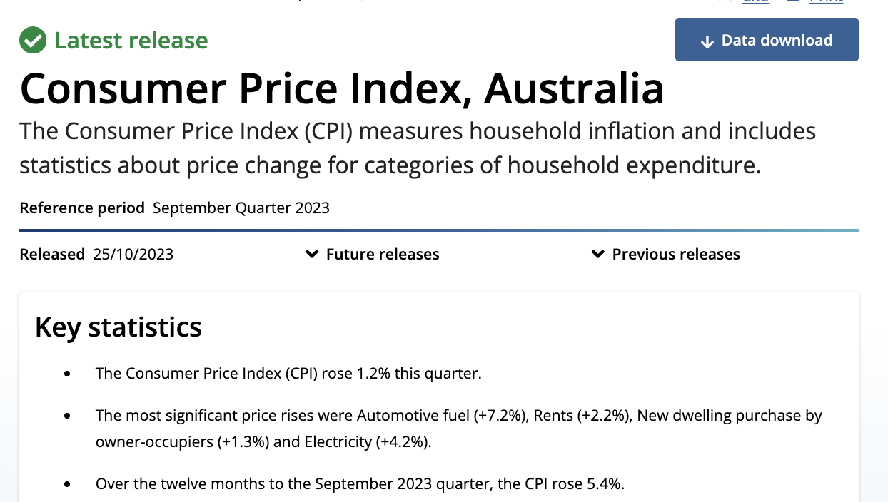
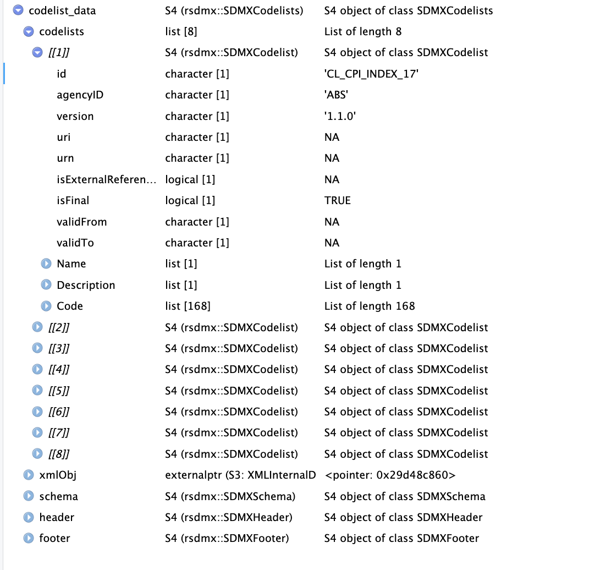

remotes::install_github("opensdmx/rsdmx")Understanding inflation in Australia with a help of ABS and SDMX
data
Money. Money. Money.
I hope you have already visualised your 10 mln check (not BILL) coming to your bank account, but let’s be specific and look at the data behind decisions to keep or raise interest rate.
So, this week we are going to look at Consumer Price Index, Australia available at the Australian Bureau of Statistics (ABS) website
The Consumer Price Index (CPI) measures household inflation and includes statistics about price change for categories of household expenditure.

Data
You can either download the data from here
or use API and get data straight to R using rsdmx package.
Note: this is NOT your traditional json format, this is RSDMX format. You can read more about RSDMX on its official website. Briefly, SDMX is a standardized framework used to exchange statistical data and metadata. It aims to improve the efficiency and interoperability of data exchange processes.
Before using the package make sure that you run:
and then load libraries:
library(tidyverse)── Attaching core tidyverse packages ──────────────────────── tidyverse 2.0.0 ──
✔ dplyr 1.1.3 ✔ readr 2.1.4
✔ forcats 1.0.0 ✔ stringr 1.5.0
✔ ggplot2 3.4.4 ✔ tibble 3.2.1
✔ lubridate 1.9.2 ✔ tidyr 1.3.0
✔ purrr 1.0.2
── Conflicts ────────────────────────────────────────── tidyverse_conflicts() ──
✖ dplyr::filter() masks stats::filter()
✖ dplyr::lag() masks stats::lag()
ℹ Use the conflicted package (<http://conflicted.r-lib.org/>) to force all conflicts to become errorslibrary(rsdmx)and now let’s get the content
myUrl <- "https://api.data.abs.gov.au/data/ABS,CPI,1.1.0/1+2+3+4+5.132305+132304+132306+102675+102676+104101+104102+104104+104105+104120+104122+115902+115922+115941+115961+117101+117104+117107+117121+117124+117127+117144+128058+128061+131197+131199+114120+115492+115522+115528+131179+131180+131181+131182+131184+131186+131187+131188+131189+131191+131193+131195+30001+30002+30003+30007+30012+30016+30022+30024+30025+30026+30027+30033+40106+97556+97561+97563+97565+114121+114122+1144+115484+115485+115495+115496+115497+115498+115500+115501+115520+115524+115529+131178+131183+131185+131190+131192+131194+30014+40001+40002+40004+40005+40006+40007+40008+40009+40010+40012+40014+40015+40025+40026+40027+40029+40030+40034+40045+40046+40047+40048+40053+40055+40058+40060+40066+40067+40072+40073+40077+40078+40080+40081+40083+40084+40085+40086+40087+40088+40089+40090+40091+40092+40093+40094+40095+40096+40098+40101+40102+97549+97550+97551+97554+97555+97557+97558+97559+97560+97564+97567+97571+97572+97573+97574+10001+20001+20002+20003+20004+20005+20006+115486+115488+115489+115493+126670+999901+999902+999903.10+20.1+2+3+4+5+6+7+8+50.Q?startPeriod=2000-Q1&dimensionAtObservation=AllDimensions"
myUrl <- "https://api.data.abs.gov.au/data/ABS,CPI,1.1.0/1+2+3+4+5.10001+20001+20002+20003+20004+20005+20006+115486+115488+115489+115493+126670+999901+999902+999903.10+20.50.Q?startPeriod=2000-Q1&dimensionAtObservation=AllDimensions"
dataset <- as.data.frame(readSDMX(myUrl))Let’s have a snippet of our data:
Rows: 440820 Columns: 10
── Column specification ────────────────────────────────────────────────────────
Delimiter: ","
chr (4): TIME_PERIOD, FREQ, UNIT_MEASURE, OBS_STATUS
dbl (6): MEASURE, INDEX, TSEST, REGION, obsValue, DECIMALS
ℹ Use `spec()` to retrieve the full column specification for this data.
ℹ Specify the column types or set `show_col_types = FALSE` to quiet this message.And we have the following names in the dataset and first 20 rows there
names(dataset) [1] "TIME_PERIOD" "MEASURE" "INDEX" "TSEST" "REGION"
[6] "FREQ" "obsValue" "UNIT_MEASURE" "DECIMALS" "OBS_STATUS" dataset|>head(20)# A tibble: 20 × 10
TIME_PERIOD MEASURE INDEX TSEST REGION FREQ obsValue UNIT_MEASURE DECIMALS
<chr> <dbl> <dbl> <dbl> <dbl> <chr> <dbl> <chr> <dbl>
1 2000-Q1 3 115941 10 1 Q 3 PCT 1
2 2000-Q2 3 115941 10 1 Q 3.5 PCT 1
3 2000-Q3 3 115941 10 1 Q 6 PCT 1
4 2000-Q4 3 115941 10 1 Q 5.8 PCT 1
5 2001-Q1 3 115941 10 1 Q 6.5 PCT 1
6 2001-Q2 3 115941 10 1 Q 6.3 PCT 1
7 2001-Q3 3 115941 10 1 Q 3 PCT 1
8 2001-Q4 3 115941 10 1 Q 3.6 PCT 1
9 2002-Q1 3 115941 10 1 Q 3 PCT 1
10 2002-Q2 3 115941 10 1 Q 2.8 PCT 1
11 2002-Q3 3 115941 10 1 Q 3.2 PCT 1
12 2002-Q4 3 115941 10 1 Q 2.8 PCT 1
13 2003-Q1 3 115941 10 1 Q 3.3 PCT 1
14 2003-Q2 3 115941 10 1 Q 2.5 PCT 1
15 2003-Q3 3 115941 10 1 Q 2.1 PCT 1
16 2003-Q4 3 115941 10 1 Q 2.4 PCT 1
17 2004-Q1 3 115941 10 1 Q 2 PCT 1
18 2004-Q2 3 115941 10 1 Q 2.5 PCT 1
19 2004-Q3 3 115941 10 1 Q 2.8 PCT 1
20 2004-Q4 3 115941 10 1 Q 2.9 PCT 1
# ℹ 1 more variable: OBS_STATUS <chr>Now, what are those variables and what are values there? We need to get metadata and we will use a very convenient ABS sdmx data dictionary to get it.
First, we need to get the Data Structure Definition (DSD) data, using the link from ABS website.
In rsdmx the properties of objects in DSD are calleds slots and can be accessed using the slot method. We extract the information about the individual slots in the DSD document we obtained already using slot() and get a list of codelists using sapply().
Note: dds is a S4 class and that is why we are using sapply()
dds<- readSDMX("https://api.data.abs.gov.au/dataflow/ABS/CPI/1.1.0?references=all")
codelist_data<-slot(dds, "codelists")We have the following codelists in our DSD:

concepts <- as.data.frame(slot(dsd, "concepts"))#get concepts from DSD concepts <- as.data.frame(slot(dsd, “concepts”))
`
stats|>summary()